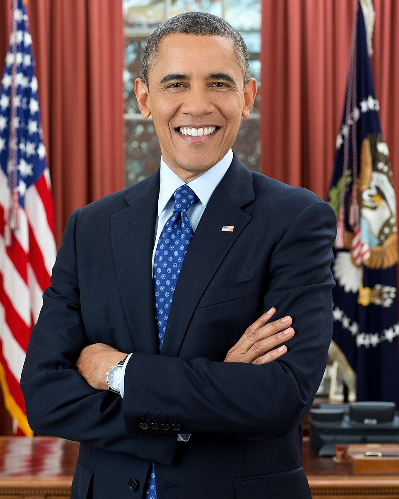
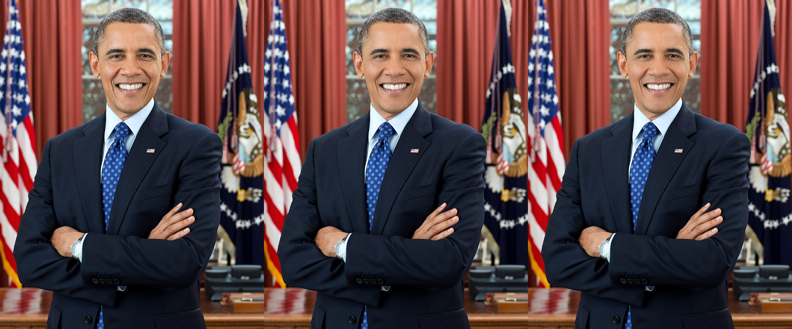
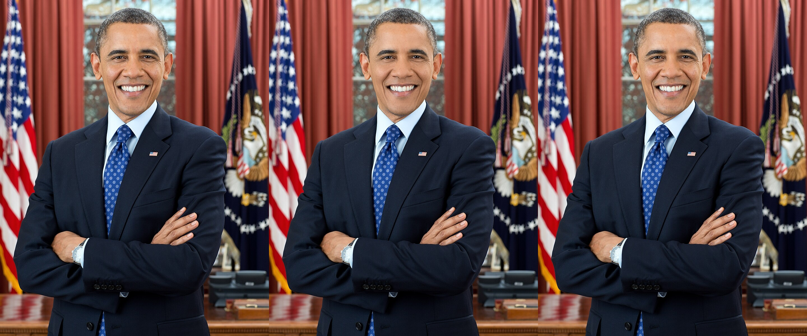
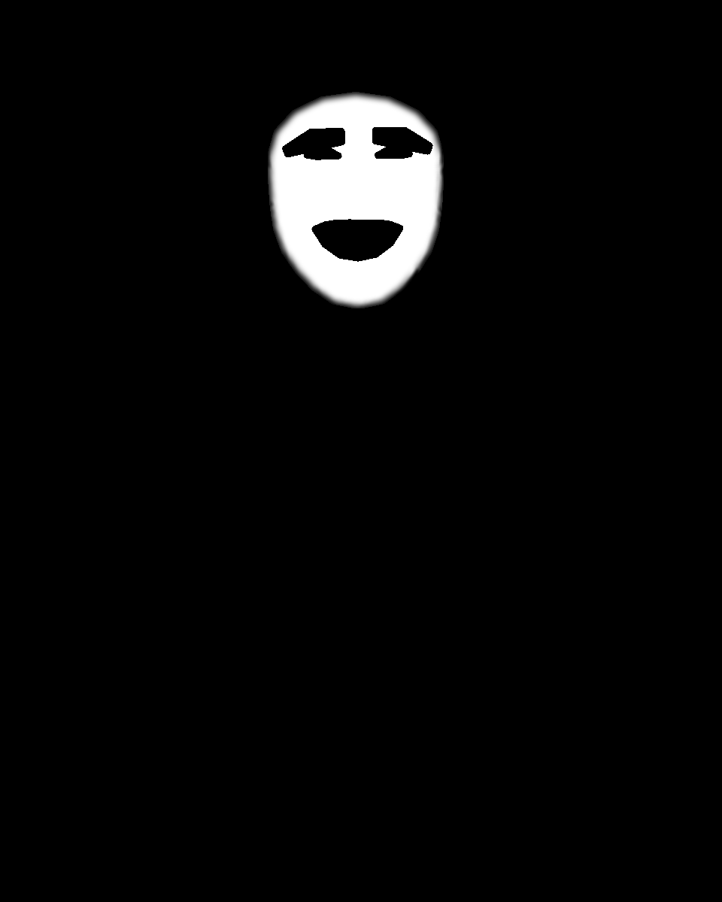
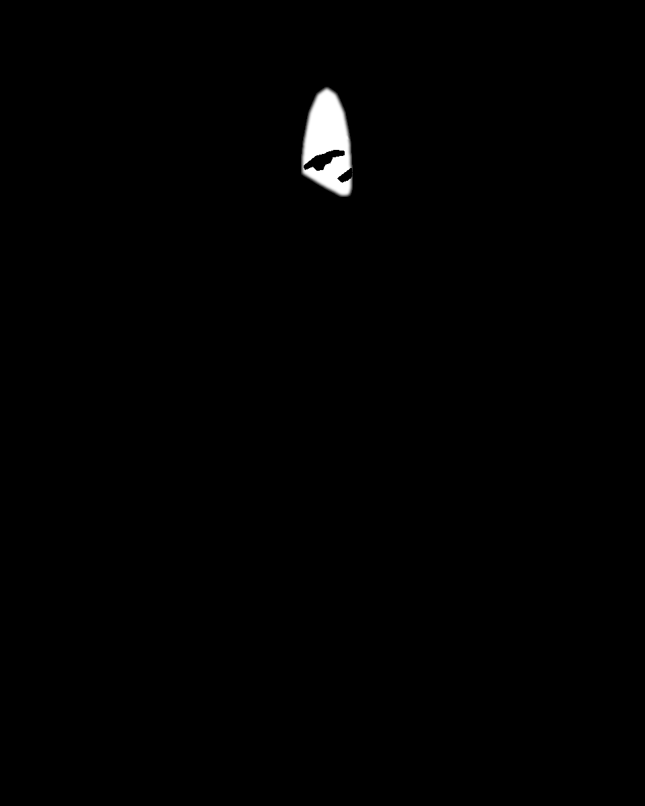
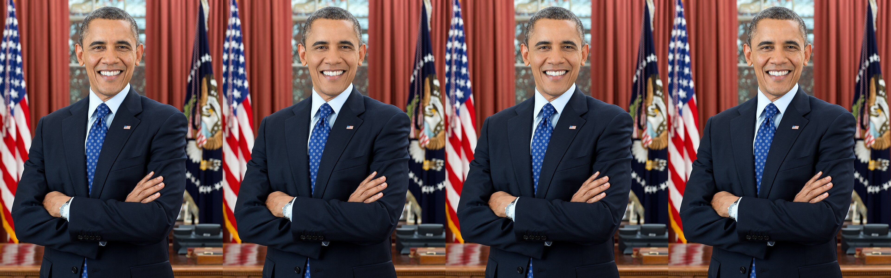
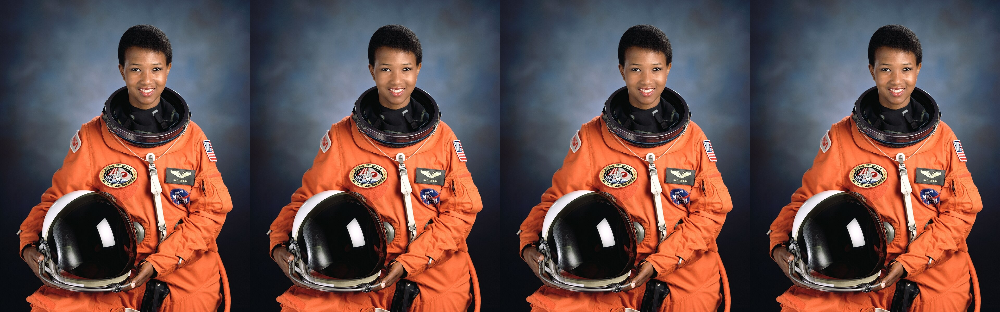
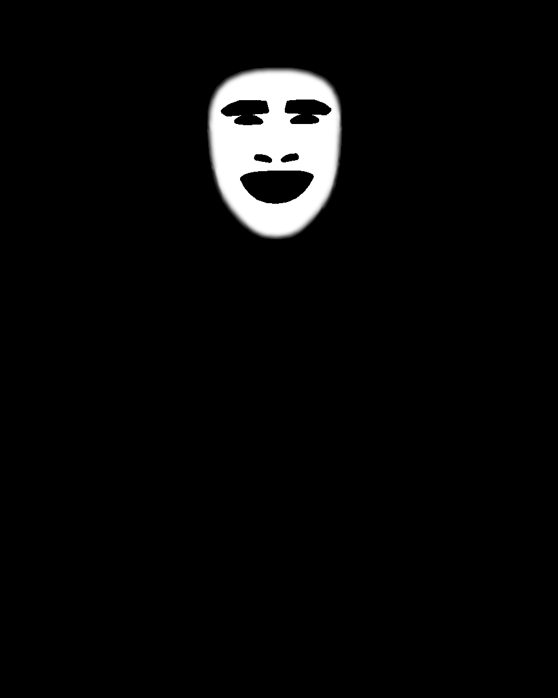
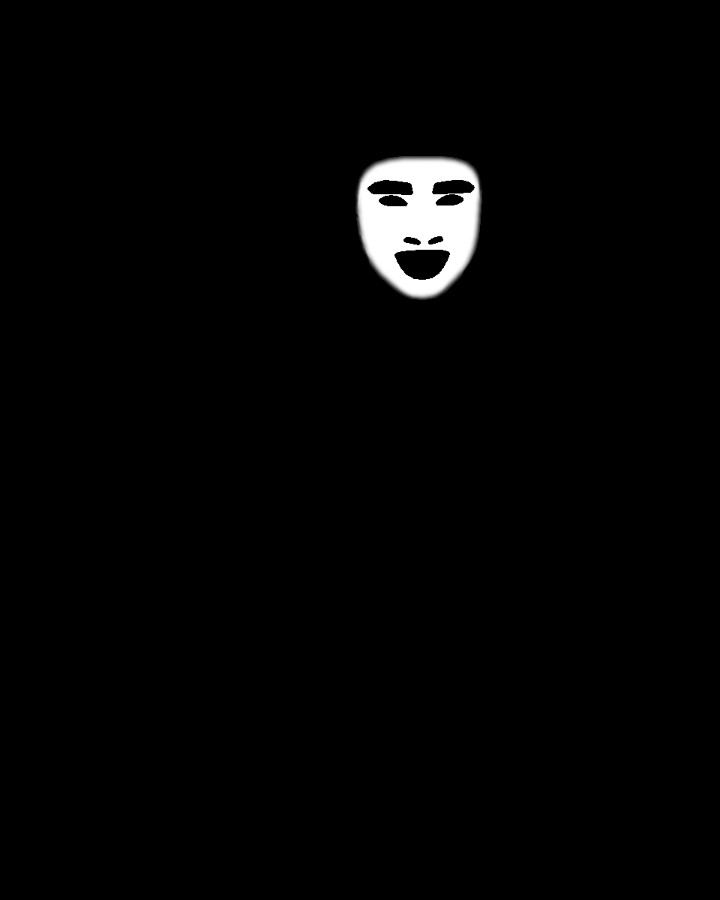

TEMP PoC Not production Vision landmarker MediaPipe (sim)
Classical face retouch — Vision (Swift & RN) vs Python
Side-by-side of Shiyu’s Python classical golden vs a Swift Vision port (standalone CLI) and the same core running inside the studio-next iOS app (Expo module). Sample: public-domain US federal portrait obama (960×1199).
- Python golden:
vsco/ai-lab-evalclassical pipeline (MediaPipe landmarks + full stages) - Swift CLI: Metro-free smoke on studio-next PR 570
- RN / app:
FaceRetouchPocmodule inside studio-next Debug simulator (same classical core)
1. Source & Python golden
Before
Python after (full classical pipeline)

Compare vs Python (obama golden)
| Python | Swift CLI (Vision, macOS) | RN / studio-next (Vision, Debug sim) | |
|---|---|---|---|
| Face width | ~226 px | ~226–227 ✓ | ~73 ⚠️ quirk |
| Mask size | ~47k px | ~44k (close) | ~8k (too small) |
| Pixel diff | — | mean ~0.09 · max 54 | mean ~0.15 · max 73 |
Swift CLI is the real port: same classical core, geometry matches Python closely enough for a PoC. RN uses that same core, but on the simulator Vision landmarks shrink the oval (~3×), so the mask/diff look worse — treat that as an iOS-sim quirk, not “RN is a worse algorithm.” Release/device + the macOS Vision path are the fidelity reference.
MediaPipe or Vision? You don’t need MediaPipe for product. Ship Vision (Apple frameworks only) as the default — intended production landmarker, no third-party redistributable, and macOS Vision already sits ~0.85–0.88 IoU vs Python (gap is forehead/nostril approximations + unported stages, not a dead end).
MediaPipe is only a parity bridge: it matches Python almost exactly (IoU ~0.95) because it shares the landmark source. Keep it optional / legal-gated for A/B against Shiyu’s goldens — not required for the Etho / Studio Pro path.
Verdict: Not a React Native / Expo wiring bug. Vision on the iOS simulator (forced usesCPUOnly) returns a shrunken landmark mesh (~73 px face width vs ~226). Same Swift sources and JPEG: MediaPipe-sim and Vision-macOS stay ~225–226; Vision-sim collapses in both the RN AppDelegate smoke and the Metro-free simctl harness.
How we fix it
- Do not gate geometry fidelity on Vision-sim — use macOS Vision smoke (and MediaPipe-sim for landmark parity) as references.
- Confirm on a physical device (no
usesCPUOnly). Expect ~226 / ~165; if so, no production code change. - Optional: tag sim
report.jsonwithvision_sim_degradedso RN Debug doesn’t look “broken.” - No RN/TS or ImageIO orientation change required for this quirk. MediaPipe is not needed to “fix” RN.
Full dig notes: rn-face-width-quirk-dig.md
2. Metrics (obama)
| Python golden | Swift CLI (Release) | RN / studio-next (Debug sim) | |
|---|---|---|---|
| Faces | 1 | 1 | 1 |
| Face width (px) | 225.6 | 226.7 | 73.2 ⚠️ |
| Mask refined (px) | 46 707 | 44 463 | 8 440 |
| Guided radius | 3 | 4 | 2 |
| Detect (ms) | 444 | 299 | 133 |
| Pipeline / classical (ms) | 1 489 (full*) | 249 (minimal core) | 12 373 (Debug) |
| vs Python pixel diff | — | mean 0.087 · max 54 | mean 0.153 · max 73 |
*Python total includes stages not ported in the Swift PoC (heal, even_tone, dark_circles, skin_probability, …). Pixel diffs vs the golden are expected.
Same golden JPEG, but the Debug simulator run reported ~73 px face_width_px_min (from the classical oval) vs ~226 on Swift CLI / Python. That shrinks the mask and worsens the vs-Python diff.
Follow-up dig (2026-09-19): outside the app, Vision’s own bounding-box width on the identical Documents JPEG and on the RN-written before.png is ~270–277 px on both — so the input file is fine. The shrink happens inside the iOS sim path when building PocFaceLandmarks / oval width (likely coordinate-space). Treat Swift CLI as the geometry reference until fixed. Debug classical time is also ~50× slower than Release — use Release for product timing.
3. Contact strips (before | python | vision)
Swift CLI (Release)

RN / studio-next module (Debug sim)

4. Skin masks
Python mask
Swift Vision mask

RN Vision mask (smaller — face-width quirk)

5. MediaPipe arm (bare mac / sim smoke) — 2026-09-19
Added via scripts/face-retouch-sim-smoke.sh on bare david-mac (runtime-downloaded MediaPipe pods + model — not bundled; no legal clearance claimed). Full tables in artifacts README and PR 570.
| sample | arm | face_width (python) | mask IoU@0.5 | vs python mean/max u8 |
|---|---|---|---|---|
| obama | MediaPipe (sim) | 225.2 (225.6) | 0.946 | 0.079 / 54 |
| obama | Vision (macOS) | 226.1 (225.6) | 0.852 | 0.088 / 54 |
| obama | Vision (sim, degraded) | 73.2 (225.6) | 0.149 | 0.153 / 73 |
| jemison | MediaPipe (sim) | 163.1 (163.1) | 0.919 | 0.047 / 33 |
| jemison | Vision (macOS) | 164.9 (163.1) | 0.878 | 0.048 / 32 |
| jemison | Vision (sim, degraded) | 51.9 (163.1) | 0.169 | 0.058 / 47 |
MediaPipe ≈ Python geometry (same landmark source). Vision macOS is the Vision reference; Vision-on-sim remains the known degraded quirk.
obama sim strip — before | python | mediapipe | vision

jemison sim strip — before | python | mediapipe | vision

obama MediaPipe mask (sim)

jemison MediaPipe mask (sim)

6. What was ported
In Swift PoC: Vision landmarks → soft skin mask → guided-filter frequency separation → base smooth → masked composite.
Not ported: MediaPipe landmarks (optional flag / legal), spot heal, even_tone, dark_circles, YCbCr skin probability.
Production default: Vision (Apple frameworks only). MediaPipe is a temporary parity bridge pending legal review.